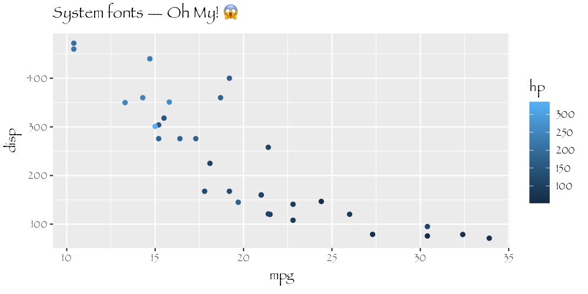

This package provides graphic devices for R based on the AGG library developed by the late Maxim Shemanarev. AGG provides both higher performance and higher quality than the standard raster devices provided by grDevices.
Use
ragg provides drop-in replacements for the png and tiff graphic devices provided by default from the grDevices packages and can both produce png and tiff files. Notable features, that sets itself apart from the build-in devices, includes:
- Faster (up to 40% faster than anti-aliased cairo device)
- Direct access to all system fonts
- High quality anti-aliasing
- High quality rotated text
- Support 16-bit output
- System independent rendering (output from Mac, Windows, and Linux should be identical)
You can use it like any other device. The main functions are agg_png() and agg_tiff(), both have arguments that closely match that of the png() and tiff() functions, so switching over should be easy.
library(ragg)
library(ggplot2)
file <- knitr::fig_path('.png')
agg_png(file, width = 1000, height = 500, res = 144)
ggplot(mtcars) +
geom_point(aes(mpg, disp, colour = hp)) +
labs(title = 'System fonts — Oh My!') +
theme(text = element_text(family = 'Papyrus'))
invisible(dev.off())
knitr::include_graphics(file)
Further, it provides an agg_capture() device that lets you access the device buffer directly from your R session.
cap <- agg_capture()
plot(1:10, 1:10)
scatter <- cap()
invisible(dev.off())
plot(as.raster(scatter))
Code of Conduct
Please note that the ‘ragg’ project is released with a Contributor Code of Conduct. By contributing to this project, you agree to abide by its terms.